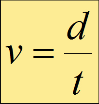
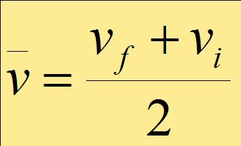
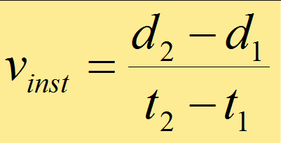
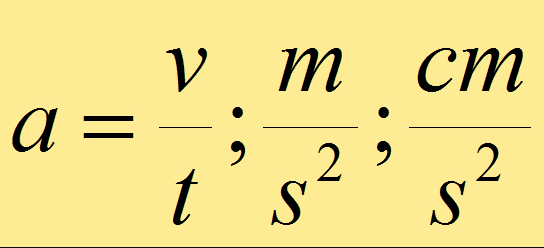
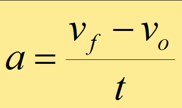

El estudio de la cinemática te permite aplicarla a tu entorno ya que vuelo de un insecto, los juegos mecánicos de la feria, el futbolista que patea la pelota, el salir de tu casa y caminar a la escuela realizas y observas los diferentes tipos de movimiento, en este apartado solo se ve el Movimiento rectilíneo y formulas para que puedas calcular velocidades y aceleraciones.
Es una magnitud vectorial que para estar bien definida requiere además de su magnitud, origen, dirección y sentido.
Es la distancia recorrida por un móvil dividido entre el tiempo que tarda en
Donde:
v = velocidad del móvil en m/s
d = distancia recorrida en m
t = tiempo transcurrido en s


Cuando en el movimiento de un cuerpo, los intervalos de tiempo considerados son cada vez más pequeños, la velocidad media se aproxima a una velocidad instantánea.

Es la variación de la velocidad de un móvil en cada unidad de tiempo.

